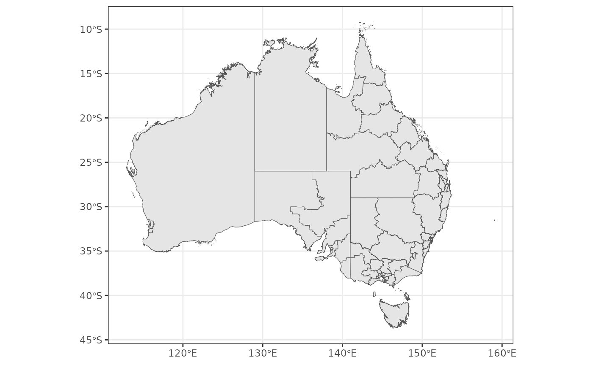

Loading polygons
getting-polygons.Rmdget_polygon() works very similarly to
?strayr::read_absmap() and it has access to all the same
shape files but also has access to additional data from {hpa.spatial.data}.
get_polygon("sa22016") |> quick_plot()
get_polygon("LHN") |> quick_plot()
#> The data for the Local Hospital Networks (LHN) are from here: <https://hub.arcgis.com/datasets/ACSQHC::local-hospital-networks/explore>
get_polygon("PHN") |> quick_plot()
#> The data for The Primary Health Network (PHN) are from here: <https://data.gov.au/dataset/ds-dga-ef2d28a4-1ed5-47d0-8e3a-46e25bc4f66b/details?q=primary%20health%20network>It includes an argument, simplify_keep, which allows the
user to simplify shape files (which is helpful when being used in
interactive maps to reduce load time).
sa2_2016 <- get_polygon(area = "sa2", year = 2016)
#> Reading sa22016 file found in /tmp/Rtmpo3oRpH
sa2_2016_simple <- get_polygon(area = "sa2", year = 2016, simplify_keep = 0.1)
#> Reading sa22016 file found in /tmp/Rtmpo3oRpH
sa2_2016 |>
filter(gcc_name_2016 == "Greater Brisbane") |>
quick_plot() +
scale_x_continuous(limits = c(152.9, 153.1)) +
scale_y_continuous(limits = c(-27.4, -27.6))
sa2_2016_simple |>
filter(gcc_name_2016 == "Greater Brisbane") |>
quick_plot() +
scale_x_continuous(limits = c(152.9, 153.1)) +
scale_y_continuous(limits = c(-27.4, -27.6))